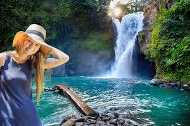

Discover Bali
Bali is a beautiful island in Indonesia, known for its stunning beaches, rich culture and vibrant nightlife. Whether you are looking for adventure or relaxation, Bali has something for everyone.

Top Activities in Bali
- Surfing at Kuta Beach
- Exploring Ubud's rice terraces
- Visiting the Tanah Lot Temple
- Relaxing in a luxury spa
How To Plan Your Trip
- Book your flights to Bali.
- Reserve accomodation near the beach or in Ubud.
- Pack your bags with lightweight clothing and sunscreen.
Learn More About Bali
Here are some useful links to plan your trip to Bali smoothly.
Contact Us
For more information, feel free to contact us via Email